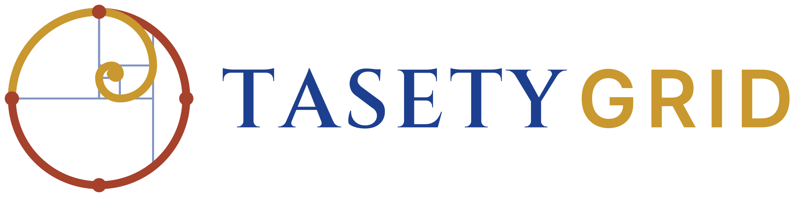
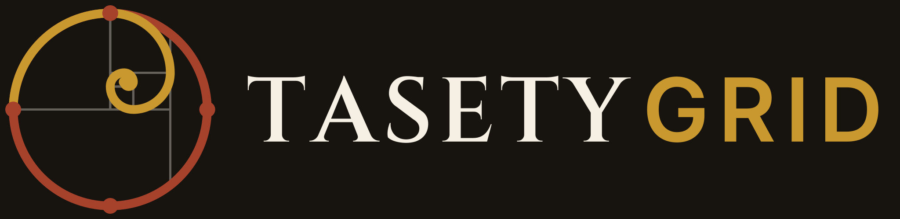
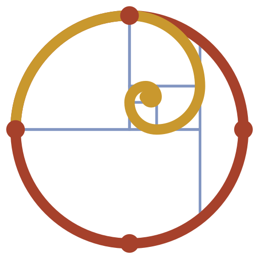
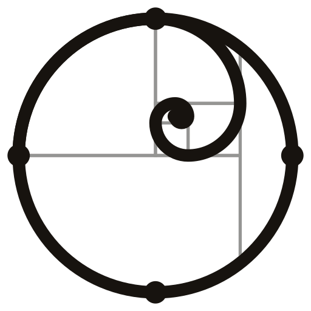
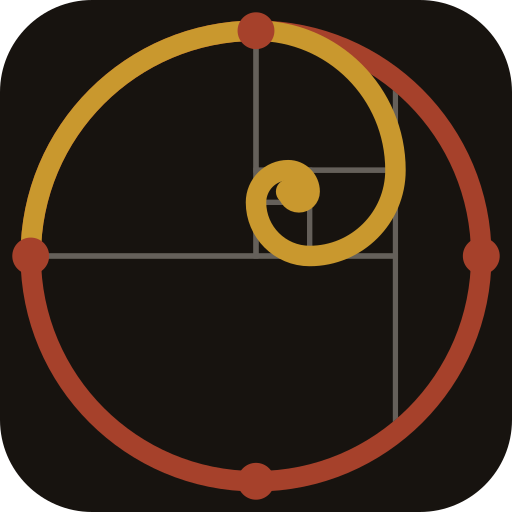
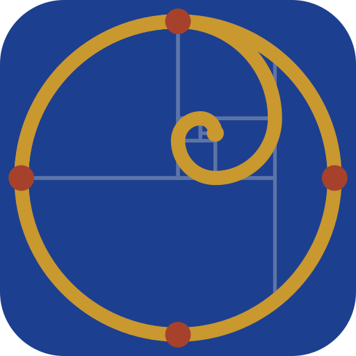

Atlas des personnes, des terres et des ressources. Ta-Sety (tꜣ-sty, « le pays de l'arc ») est le nom que l'Égypte ancienne donnait à la Nubie. Le symbole Kodya réunit une coquille d'escargot qui grandit sur une grille, et le cercle du cosmogramme kongo : la coquille grandit jusqu'à devenir le cercle.



Symbole
Monochrome
Inversé
Icône d'applicationBleu égyptien#1D3F8F · principal
Or de Nubie#C9982E · accent
Ocre de Kerma#A6412B · accent
Noir Kemet#17130F · texte
Blanc mpemba#F6F0E4 · fond
Turquoise faïence#2E8C83 · données
Cinzel SemiBold — capitales lapidaires. Titres et logotype.
Inter — interface, chiffres, données, texte courant.